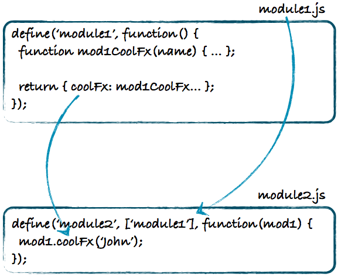

(et aussi : Discover DevTools et The Breakpoint)
Bien plus que console.log !
Complétion, Cmd+K/Ctrl+L, Shift+Return…
time / timeEnd
dir, table
$_, Save As Global Variable, copy
$0 / inspect(el), Force Element State, $$
monitorEvents, Break On… (+ Elements > Event Listeners)
Le pas à pas, en détail
Des breakpoints sur tout !
Expressions espions (watches)
Pile d'appels (call stack). Noms de fonctions.
Portée
Gestion des exceptions
Beautifying !
Tout ce qui est stocké en local :
Analyse des performances de chargement
Distinction latence / chargement
Visualisation détaillée (en-têtes, corps, preview…)
Mode persistent (record)
Toute l'activité : ressources, XHR, WebSockets…
Analyse des performances d'exécution
Chargement / Parsing / Rendering / Painting
Groupes asynchrones
Monitoring événements, FPS, RAM ; GC !
Mode persistent, là aussi.
Réduction du bruit (< 15ms)
Préalable obligatoire à l'optimisation !
Pas seulement JS : sélecteurs CSS et occupation RAM
Profils/snapshots nommés + persistence possible
Genre DOM Monster + GTMetrix…
Performances loadtime + runtime
État actuel ou dès chargement
Voir aussi JS Performance Rocks!
Émuler le touch, la géoloc, l'accéléromètre
CSS print
RWD, taille d'écran et densité de pixels
Network Throttling (y compris offline)
User Agent
CanIUse + Google Analytics = Awesome !
HTML5 Please : détails de prise en charge et polyfills
HTML5Test : et ton navigateur, il roxxe ?
In-page feature detection
Sans doute le seul script forcément à chargement synchrone, et dans le head :-)
À peu près tous les aspects de CSS2/3 et « HTML5 »
Classes positives/négatives sur le document : évite au passage de saloper nos feuilles à coups de hacks CSS
Un polyfill est un ersatz, un substitut qui tente de fournir une API identique (ou au moins équivalente) à celle d'une fonction non prise en charge par l'environnement (typiquement le navigateur)
Y'en a plein !
Les fameux IEx.js de Dean Edwards, Raphaël, html5shiv, ExCanvas, SublimeVideo, Socket.IO, es5-shim…
Le format historique, synchrone, popularisé par Node
On parle en fait de CommonJS/1.0 (plein d'extensions…)
Très facile à comprendre :
exports.key = value
mod = require('pathspec')
Mais pourquoi ?
Asynchronous Module Definition
Conçu notamment pour les browsers
Tout module CommonJS peut être « enrobé » en AMD
Principal loader : RequireJS
Clé de voute :
define('name', [path, …], cb(mod, …) {})

ES6 fournit une syntaxe native de modules.
Syntaxe souple, inspirée entre autres de Python. Déjà disponible dans certaines implémentations préalables (Node 0.11, Chrome 35+, Firefox 25+…).
Comparez avec CommonJS (mapping facile)
SystemJS est un chargeur universel qui permet, dès maintenant, de faire collaborer les 3 types de modules et les scripts globaux, en cas de besoin. Pour ES6, il repose sur l'excellent shim es6-module-loader.
Parce que !
Dès qu'on commence à avoir une masse de code, un formalisme et un socle bien testé et bien maintenu deviennent indispensables. C'est comme pour le côté serveur !
On perçoit quelques grandes catégories :
La base : le squelette de MVC, sans plus
Les full clients : la totale… pour le côté client
Comme son nom l’indique, juste l’ossature critique
De loin le plus répandu (même sans marketing)
Une couche modèle bien solide, à la base REST+JSON
Couche routeur pas mal
Couche vue minimaliste mais riche en BP
Énormément de plugins pour enrichir le tout
(notamment Marionette pour ajouter du lourd côté vues)
Backbone + Marionette
…
Déjà ancien mais Google bombarde en marketing depuis 2010
Sur-architecturé ; ratio puissance/complexité plutôt bas
Soucis récurrents sur les choix de data sources, les scopes…
Les directives et le dirty checking sont très lourds en perfs
Angular 2, sera nettement mieux mais 10% compatible 1.
Beaucoup de bons concepts mais l'exécution est faiblarde.
Issu de SproutCore ; influencé par Rails
Yehuda Katz & Tilde (jQuery, Rails, Handlebars…)
Bon ratio puissance/complexité
Porte de sortie fréquente des « brûlés par Angular »
Désormais 100% ES6 (transpilé), dont modules
Data binding plus léger et performant, via HTMLBars
Équivalent à Backbone + Marionette + du sucre syntaxique et des conventions de structuration et de nommage ; très sympa.
Le plus « battle-tested » au monde : au cœur de Walmart Mobile. Énormément de services, factories, conventions, etc. Archi industrielle adaptée aux (très) grosses applis clients.
Tout le monde parle de Grunt, Gulp, Broccoli… Mais Brunch est là depuis 4 ans et les enterre tous en application assembly.
Pas un exécuteur générique de tâches
Une vraie pipeline optimisée pour le build d'applis
Extrêmement réactif : entre 60ms et 200ms de la sauvegarde de fichier à la fin des rebuilds appropriés.
Énormément de puissance en très (très) peu de config ; repose plutôt sur plein de conventions (mais reste configurable)
Écosystème très riche de plugins
Fichier brunch-config.coffee (ou .js)
exports.config =
files:
javascripts:
joinTo: 'app.js'
stylesheets:
joinTo: 'app.css'
templates:
joinTo: 'app.js'JS = sources ES3/5/6, TypeScript, CoffeeScript, etc.
Styles = sources CSS, SASS, LESS, Stylus, etc.
Templates = sources Handlebars, Jade, etc.
Si le plugin est présent, ses traitements sont automatiques !
Mais aussi : spriting et optimisation des images, maintenance manifeste AppCache, injection live CSS, reloading si changement JS, etc.
Tout ça est configurable finement, mais par défaut :
app/ et vendor/public/_ sont ignorés (on suppose qu'ils seront importés/inclus par d'autres)assets/ est copié verbatimvendor/ ne sont pas enrobés en modules, simplement concaténésapp/Ce sont des modules Node qu'il suffit d'installer en local pour qu'ils soient pris en compte.
Ils s'inscrivent sur un type de fichier (javascript, stylesheets ou templates) et 1+ extension/motif de fichier.
Par exemple, jade-brunch s'inscrit sur le type templates pour l'extension .jade.
Par défaut, Brunch ne traite aucun type de fichier d'office ; il lui faudrait au moins javascript-brunch pour s'occuper des .js et css-brunch pour s'occuper des .css. Donc très léger !
Y'en a des tonnes :-)
La commande brunch build fait un build one-shot, mais…
brunch watch poursuit en surveillant les dossiers définis pour mettre à jour, super vite, les fichiers cibles nécessaires.
Elle peut même fournir un mini-serveur HTTP sur le dossier cible, avec brunch watch --server
Par défaut, les fichiers produits sont orientés développement : HTML indenté, JS et CSS non minifiés, etc.
Pour une release, on demande à Brunch de produire les versions de production avec brunch build --production
Si les plugins idoines sont présents (ex. uglify-js-brunch et clean-css-brunch), une minification optimale est effectuée. On peut aussi optimiser les images, etc.
Sorte de µ-Foursquare
Regarde où on est, cherche des endroits où manger, check-in !
Historise les check-ins
Gestion pratique du offline
files:
javascripts:
joinTo: 'app.js'
stylesheets:
joinTo: 'app.css'
templates:
joinTo: 'app.js'
modules:
nameCleaner: (path) ->
path
# Strip app/ and app/externals/ prefixes
.replace /^app\/(?:externals\/)?/, ''
# Allow -x.y[.z…] version suffixes in mantisses
.replace /-\d+(?:\.\d+)+/, ''
# Allow -fr lang suffixes in mantisses
.replace '-fr.', '.'
plugins:
appcache:
externalCacheEntries: [
'http://maps.gstatic.com/mapfiles/place_api/icons/bar-71.png'
'http://maps.gstatic.com/mapfiles/place_api/icons/generic_business-71.png'
'http://maps.gstatic.com/mapfiles/place_api/icons/restaurant-71.png'
'http://maps.gstatic.com/mapfiles/place_api/icons/wine-71.png'
]
network: ['*', 'http://*', 'https://*']
server:
path: 'jst-server.coffee'
watcher:
usePolling: true
Stylus et LESS (Bootstrap) pour les CSS
Jade pour le templating
Backbone pour le MVC côté client
W3C / HTML5 pour la géolocalisation et la détection offline
sessionStorage pour du stockage local transient
Lawnchair pour l'abstraction de stockage local persistant
Google Maps pour l'obtention de POI où manger
ApplicationCache pour le cache offline
Moment.js pour l'horloge et Underscore.js pour l'algo
Node et CoffeeScript pour le serveur de démo
Bon, pour le moment, je passe sous Keynote…
$ cd spa-basis
$ npm install
…
$ npm start
> js-total-spa@2.0.0 start …/spa-basis
> brunch watch --server
22 Oct 16:59:34 - info: starting custom server
Cannot load db.json
Listening on port 3333… WebSockets enabled.
22 Oct 16:59:34 - info: custom server started, initializing watcher
22 Oct 16:59:35 - info: compiled 37 files and 1 cached into 2 files, copied…
Bon vieux prompt + persistance dans sessionStorage
Saisies pourries (null, whitespaces…), non persistées : nom l’aléatoire. Première rencontre avec Underscore :-)
var userName = sessionStorage.userName ||
$.trim(prompt("Votre nom d’utilisateur"));
1er getRenderData() et variable dans un template Jade.
getRenderData: function getHomeRenderData() {
return { userName: userName };
}
span= userName
Backbone.View ne fournit/impose que peu de chose, mais top
Conteneur DOM : el, $el
Gen du conteneur : tagName, id, className, attributes
Modèle associé : model / collection
Lookup jQuery prescoped : $ (on fait this.$(…))
Rendering : render()
Délégation d’événements : events
Injection initiale + mise à jour ultérieure.
Le DOM doit être garanti à jour : afterRender.
Bon vieux setInterval(…, 1000)
afterRender: function afterHomeRender() {
this.startClock();
},
// …
startClock: function startClock() {
this._clock = this._clock || this.$('#ticker');
var that = this;
setInterval(function() {
that._clock.text(that.getRenderData().now);
}, 1000);
}
Le pavé de gauche contient une vue complexe avec des tas de gestions spécifiques : on va en faire un contrôleur (Backbone.View) dédié, et l'intégrer dans la vue racine.
var View = require('./view');
module.exports = View.extend({
template: require('./templates/check_in')
});
var CheckInView = require('./check_in_view');
// …
afterRender: function afterHomeRender() {
this.startClock();
new CheckInView({ el: this.$('#checkInUI') }).render();
},
On a 2 modules qui nous découplent des technos sous-jacente :
lib/location par-dessus la géoloc W3C
lib/places par-dessus Google Places
afterRender: function() {
this.fetchPlaces();
},
fetchPlaces: function() {
locSvc.getCurrentLocation(function(lat, lng) {
console.log(lat, lng);
if (_.isString(lat)) {
return;
}
poiSvc.lookupPlaces(lat, lng, function(places) {
console.log(places);
});
});
}
Passer par du data-binding pour contrôler proprement l’état de l’UI et l’UX en fonction des éléments de l’état de la vue (latitude, longitude, POIs, sélection, commentaire…).
Le plugin le plus abouti est actuellement Backbone.StickIt
bindings: {
// sélecteur CSS -> descripteur de binding, +/- avancé
'#comment': 'comment',
'#places': {
observe: ['places', 'placeId'],
onGet: function() { return this.getRenderData().placeList; },
updateMethod: 'html'
},
// …
}
Système de convention pour écouter les actions sur l'UX et y lier des méthodes de la View.
Très efficace : gère la délégation d'événements, le verrouillage du contexte d'exécution (this) et se limite aux enfants de this.$el
events: {
// La clé est composée du nom de l'événement et du sélecteur CSS.
// La valeur est le nom de la méthode du controler
'click header button': 'fetchPlaces',
'click #places li': 'selectPlace',
'submit': 'checkIn'
}
On accède par get et set aux attributs
Gère les dirties (attributs modifiés), le isNew(), et un minimum de validation (mais plein de plugins), et toJSON()
Des plugins pour les relations entre modèles, etc.
Événements change et change:attribute, invalid, request, error, sync et destroy.
Pré-intègre plusieurs méthodes cool d’Underscore : pairs(), pick(), omit(), keys(), values() et invert().
module.exports = Backbone.Model.extend({
// …
});
Liste de modèles, souvent de même type indiqué par model.
Clé primaire par défaut des modèles : id.
Ordre naturel personnalisable.
Événements add, remove, sort et reset. Ceux des modèles remontent sur la collection aussi (bubbling).
Pré-intègre plein de méthodes cool d’Underscore, dont each, map, find/filter/findWhere/where, all, any, invoke, pluck…
module.exports = Backbone.Collection.extend({
model: require('./check_in')
});
On va se créer une collection de check-ins, et y ajouter nos objets soigneusement définis.
var CheckInsCollection = require('models/collection');
var collection = new CheckInsCollection();
function addCheckIn(checkIn) {
checkIn.key = checkIn.key || Date.now();
collection.add(checkIn);
}
exports.addCheckIn = addCheckIn;
var store = require('lib/persistence');
// …
checkIn: function(e) {
// …
store.addCheckIn({ … });
},
Le couple gagnant du Web des APIs, et celui que Backbone prend en charge par défaut.
| Méthode | URL | Action |
|---|---|---|
GET |
/checkins |
List |
POST |
/checkins |
Create |
GET |
/checkins/<key> |
Read |
PUT/PATCH |
/checkins/<key> |
Update |
DELETE |
/checkins/<key> |
Destroy |
model: require('./check_in'),
url: '/checkins'
function addCheckIn(checkIn) {
collection.create(checkIn); // add + save
}